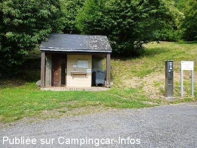
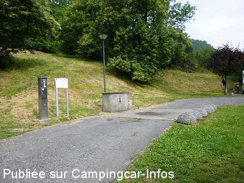
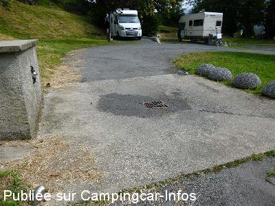
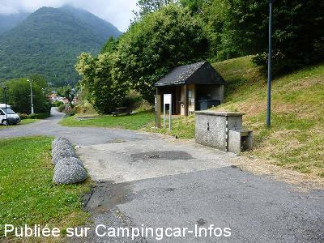
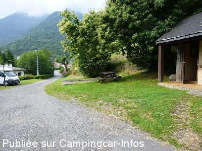
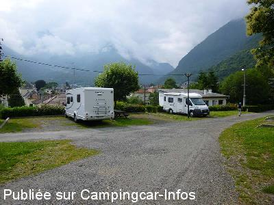

ASN = Aire de services avec stationnement nuit possible de :
PIERREFITTE NESTALAS
(N° 531)
Accès/adresse :
Accès Route de Cauterets
65260 PIERREFITTE NESTALAS
65260 PIERREFITTE NESTALAS
Latitude : (Nord) 42.95989° Décimaux ou 42° 57′ 35′′
Longitude : (Ouest) -0.07723° Décimaux ou 0° 4′ 38′′
Tarif : 2014
50 L d'eau : 1 €
Type de borne : Artisanale
Services :


Aire de pique-nique
Autres informations :
Ouvert toute l'année
13 emplacements
Tél Office de Tourisme : +33(0)562 927 131
http://www.pierrefitte-nestalas.com

Le 30/06/2014 par Fanfan

Le 30/06/2014 par Fanfan

Le 30/06/2014 par Fanfan

Le 30/06/2014 par Fanfan

Le 30/06/2014 par Fanfan

Le 30/06/2014 par Fanfan
de
sybrub
le 02/05/2015 :
Aire sympa en plus gratuite. Nous y étions la nuit du 18 au 19 avril avant de monter à cauterets pour y passer la semaine
Aire sympa en plus gratuite. Nous y étions la nuit du 18 au 19 avril avant de monter à cauterets pour y passer la semaine
de
Rémi&Nathalie
le 10/03/2015 :
De passage le 8 Mars 2015, super décor et nuit calme, souhaitons que ça reste gratuit...
De passage le 8 Mars 2015, super décor et nuit calme, souhaitons que ça reste gratuit...
de
Fanfan
le 30/06/2014 :
Superbe emplacement pour cette aire. Un peu boueuse les lendemain d'orages. L'endroit est très calme. Proche des commençants.
Superbe emplacement pour cette aire. Un peu boueuse les lendemain d'orages. L'endroit est très calme. Proche des commençants.
de
VALENTIN
le 14/06/2011 :
De passage pour tenter le tourmalet à vélo.... très dur mais magnifique. L'aire est très bien située à proximité du centre à pied. Et surtout des balades en rando extra. Que du bonheur.
Camping caristes super sympas.
Un peu de bruit le samedi car fête de cuba mais pas de gros souci
Merci à la municipalité
De passage pour tenter le tourmalet à vélo.... très dur mais magnifique. L'aire est très bien située à proximité du centre à pied. Et surtout des balades en rando extra. Que du bonheur.
Camping caristes super sympas.
Un peu de bruit le samedi car fête de cuba mais pas de gros souci
Merci à la municipalité
de
pr
le 10/03/2011 :
de passage en mars 2011. aire très bien située avec commerce (boulangerie, boucherie, presse, loueurs de ski...)à pied.
proximité également des stations de ski et de la piste verte (ancienne ligne de chemin de fer transformée en piste cyclable)
Possibilité de vidanger les WC chimique dans toilette à la turque. eau à volonté avec petit robinet. Aire très sûre et très calme. Nous y avons dormi 5 nuits.
de passage en mars 2011. aire très bien située avec commerce (boulangerie, boucherie, presse, loueurs de ski...)à pied.
proximité également des stations de ski et de la piste verte (ancienne ligne de chemin de fer transformée en piste cyclable)
Possibilité de vidanger les WC chimique dans toilette à la turque. eau à volonté avec petit robinet. Aire très sûre et très calme. Nous y avons dormi 5 nuits.
de
kezako53
le 08/11/2010 :
Bonjour. Je confirme pour l'eau, de passage du 15 au 17 octobre, nous avons eu environ 25 L d'eau pour 1€ au lieu des 50 L prévus. Pas de nettoyage cassette WC. Sinon, endroit très calme avec vue sur la montagne qui était enneigée le matin du 17 octobre. A recommander.
Bonjour. Je confirme pour l'eau, de passage du 15 au 17 octobre, nous avons eu environ 25 L d'eau pour 1€ au lieu des 50 L prévus. Pas de nettoyage cassette WC. Sinon, endroit très calme avec vue sur la montagne qui était enneigée le matin du 17 octobre. A recommander.
de
Bertand gerard
le 02/11/2010 :
J'ai passé deux nuits sur ce très bon emplacement, petit problème avec le monnayeur, il ne donne pas l'eau prévue.
J'ai passé deux nuits sur ce très bon emplacement, petit problème avec le monnayeur, il ne donne pas l'eau prévue.
de
Thierry
le 26/07/2010 :
Aire ouverte et encore gratuite (services et stationnement), mais peut-être plus pour longtemps (présence d'un appareil à jeton ou pièce), apparemment, calme pouvant accueillir 13 voire 14 camping-cars sur des emplacements parfaitement plats et delimités. Merci à la municipalité. Pensez à visiter les commerces de la ville qui sont très sympas ... sauf un (que je ne citerais pas).
Aire ouverte et encore gratuite (services et stationnement), mais peut-être plus pour longtemps (présence d'un appareil à jeton ou pièce), apparemment, calme pouvant accueillir 13 voire 14 camping-cars sur des emplacements parfaitement plats et delimités. Merci à la municipalité. Pensez à visiter les commerces de la ville qui sont très sympas ... sauf un (que je ne citerais pas).